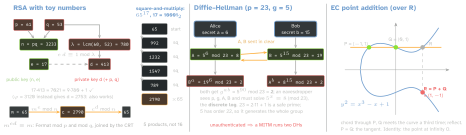
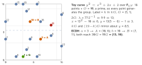

RSA — keys and operations
- Keygen: equal-size primes p, q (1536 bits each for RSA-3072); n = pq; λ= lcm(p-1, q-1) (RFC 8017; φ also works, larger d); e = 65537 = 216+1; d = e-1 mod λ by extended Euclid.
- FIPS 186-5: n ≥2048; e odd, 216 < e < 2256 (e = 3 is out); |p - q| > 2nlen/2-100 (else Fermat’s method factors n); 2nlen/2 < d < λ.
- Encrypt c = me, decrypt m = cd; sign s = EMd, verify se = EM (all mod n; EM = padded H(m)). e = 65537: 16 squarings + 1 product.
- CRT (RFC 8017 key p, q, dP, dQ, qInv): two half-size powers, ≈4× faster. Toy: dP = 53, dQ = 49, qInv = 38; m1 = 4553 mod 61 = 4, m2 = 3449 mod 53 = 12, h = (m1 - m2) qInv mod p = 1, m = m2 + qh = 65.
- Factoring gives d; “breaking RSA ⇒ factoring” is unproven.
Padding — textbook RSA is broken
| deterministic | same m → same c: guess, encrypt, compare |
| malleable | c ·2e mod n decrypts to 2m |
| e = 3, m3 < n | c is a plain cube: take the integer cube root |
| v1.5 encryption | a 1-bit “padding OK?” oracle decrypts or signs in ∼220 queries
(Bleichenbacher); ROBOT: 27 of the top 100 domains; Marvin: timing alone |
Fix: OAEP (encryption) and PSS (signatures), REQUIRED for new applications by RFC 8017. NIST disallowed v1.5 key transport after 2023; v1.5 signatures survive in certificates and JWT RS256. OAEP carries ≤k - 2hLen - 2 bytes: RSA-2048 + SHA-256 = 190 B → wrap a key (hybrid), never bulk data.
Factoring cost — sub-exponential
GNFS ≈exp(1.923 (lnn)1/3(lnlnn)2/3) → 3072 bits for 128-bit security. Records: RSA-250 (829 bits, ∼2700 core-years); RSA-260 (862 bits, Sep 2026, ∼4900 GPU-days ≈ $400k, “essentially no algorithmic advancements”; RSA-1024 put at ∼$30M, RSA-2048 ∼109× harder).
Diffie–Hellman and the discrete log
- Each side sends gx mod p; both reach gab; unauthenticated, so sign the transcript. The NFS solves the DLP in Zp* sub-exponentially too → RSA-like sizes (3072-bit p, 256-bit subgroup).
- RFC 7919 safe-prime groups ffdhe2048…8192, g = 2 (2048 rated ≈103 bits); peers MUST check 1 < Y < p - 1, else Y = p - 1 forces a 2-element subgroup.
- Logjam: NFS precomputation depends only on p. 512-bit export DH fell per connection (8.4 % of top-1M domains); breaking the commonest 1024-bit prime would expose 18 % of top-1M HTTPS.
Comparable strength — SP 800-57 Pt 1 Rev 5, Table 2
| bits | symmetric | RSA/DH | ECC (|n|) | ratio | NIST (IR 8547 draft) |
|---|
| ≤80 | 2TDEA | 1024 | 160–223 | — | insufficient |
| 112 | 3TDEA | 2048 | 224–255 | 9× | deprecated after 2030 |
| 128 | AES-128 | 3072 | 256–383 | 12× | disallowed after 2035 |
| 192 | AES-192 | 7680 | 384–511 | 20× | disallowed after 2035 |
| 256 | AES-256 | 15360 | 512+ | 30× | disallowed after 2035 |
IR 8547 treats RSA, ECDSA, EdDSA, DH, ECDH alike: Shor solves factoring and both discrete logs in polynomial time; Gidney 2025: RSA-2048 in <1 week on <1 M noisy qubits.
Elliptic curves — the group
Points on y2 = x3 + ax + b over Fp, plus O. Chord λ= y2 - y1/x2 - x1, tangent λ= 3x12 + a/2y1; x3 = λ2 - x1 - x2, y3 = λ(x1 - x3) - y1; -P = (x, -y); divide = multiply by the inverse mod p. kG by double-and-add. ECDLP (k from kG): best known for good curves is Pollard’s rho, ∼√(n) steps → 256-bit n = 128-bit security. Hasse: #E ∈p + 1 ±2√(p); cofactor h = #E/n.

Curves in use
| curve | equation · field | h | used for |
|---|
| P-256 | y2 = x3 - 3x + b, p = 2256 - 2224 + 2192 + 296 - 1; b from a seed | 1 | TLS 1.3 MUST; ES256, APNs |
| secp256k1 | y2 = x3 + 7, p = 2256 - 232 - 977 | 1 | Bitcoin |
| Curve25519 | v2 = u3 + 486662u2 + u, p = 2255 - 19, u = 9; clamp: low 3 bits 0, bit 255 = 0, bit 254 = 1 | 8 | X25519 (TLS SHOULD) |
| Ed25519 | -x2 + y2 = 1 + dx2y2, d = -121665/121666: same curve, Edwards form | 8 | SSH default |
ECDSA vs Ed25519 — the nonce
| ECDSA (FIPS 186-5) | Ed25519 (RFC 8032) |
|---|
| nonce | random k, or RFC 6979 (deterministic) | r = SHA-512(prefix ‖ M) mod L |
| sign | r = (kG)x, s = k-1(z + r d) mod n | R = rB, S = r + H(R ‖A ‖M) s mod L |
| bytes | r ‖s = 64 (JWS), DER ≤ 72 | 64; reject S ≥L |
| malleable | yes: (r, n - s) verifies | no |
Nonce reuse: same k ⇒ same r; k = z1 - z2/s1 - s2, d = s1 k - z1/r (mod n): the key from two signatures. Sony signed PS3 code with one fixed k; LadderLeak took OpenSSL ECDSA keys from <1 bit of nonce leak per signature.
Traps
- “Signing = encrypting with the private key” — only in textbook RSA.
- “256-bit ECC = 256-bit security” — it is 128.
- A starved RNG at key generation repeats a prime: gcd(n1, n2) = p (gcd(3233, 61·59) = 61). A batch GCD factored the RSA keys of 0.50 % of TLS and 0.03 % of SSH hosts.
- Square-and-multiply branches on secret bits; timing leaks the key (Kocher) → constant-time ladder, blinding.
- ECDH without an on-curve check: invalid points leaked keys from 2 of 8 TLS libraries. X25519 accepts any 32 bytes by design.